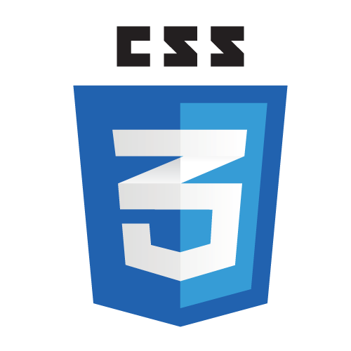
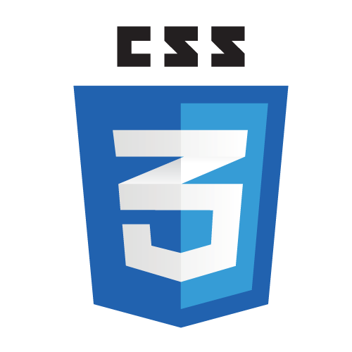

- Creatif
- Rigoureux
- Sens De l'Estetique
- Capacite d'Organisation
- Esprit Pragmatique
- Sens Client
- Respect Des Deadlines
- cardonwendso@gmail.com
- 06/35/32/95/95
- Villeneuve d'Ascq 59650
- Vehiculé
PROFIL
Développeur web passionné et en constante évolution, je maîtrise les technologies front-end
et back-end, notamment HTML, CSS, JavaScript, et des frameworks comme React. Fort d'une
formation solide et d'une curiosité naturelle pour les nouvelles technologies, je m'efforce
de créer des expériences utilisateur intuitives et performantes. Mon objectif est de
contribuer à des projets innovants en apportant des solutions créatives et efficaces, tout
en continuant à développer mes compétences techniques.
SAVOIR ETRE
CONTACT
RESEAUX SOCIAUX
MAITRISE DES LOGICIELS


 



EXPERIENCES
AUTO ENTREPRENEUR
Villeneuve d'Ascq | 2019-2024
- Création de sites en ligne avec Wordpress (je privilège une conception web centrées sur UI/UX, en utilisant wireframes, mockups, et CTA pour des sites adaptés a tous les ecrans, avec une estètique soignée, maitrise HTML, CSS et Java Scprit)
- Elaboration de logos professionnel avec Adobe illustrator
BRODEUR
PUBOS | Neuville-en-Ferrain | CDI
- Creation de BAT : Adobe Illustrator pour placer le logo sur les vetements et obtenir la validation du client quant a sa position. Technique broderie.
FORMATION ET DIPLOMES
ForeachAcademy
Marcq-en-Baroeul |Aout 2024- Fev 2025|Formation
Diplome préparé:Développeur Web et Web mobile Bac+2
CAP Couture Flou
Roubaix|Aout 2016- Fev 2018|Formation
Alternance
Baccalaureat
Valencienne